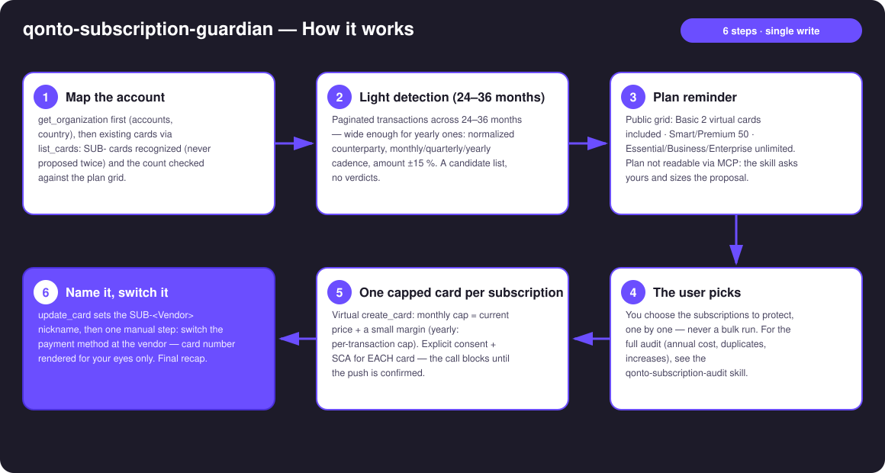
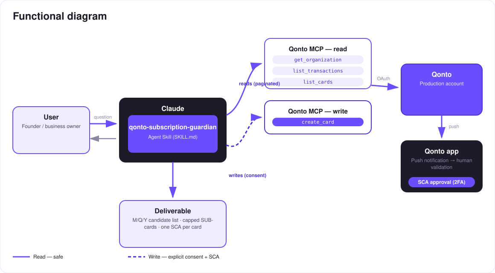

One capped virtual card per subscription — light detection, your pick, creation behind SCA. An action utility, nothing more.
Every subscription charges whatever it wants on YOUR main card. This skill does one thing, well: generate capped virtual cards, one per subscription — nothing more.
Recurring charges across 24–36 months — wide enough to catch yearly ones: normalized counterparty, M/Q/Y cadence, amount stable ±15 %. A candidate list, no verdicts.
The skill counts your cards (list_cards), recalls your plan's grid and proposes a number of cards that fits — never a bulk run.
Virtual create_card, monthly cap = price + a small margin (yearly: per-transaction cap) — one at a time, consent + SCA every time.
Nickname SUB-<Vendor> via update_card; existing SUB- cards are recognized, never proposed twice.
The honest pitch: dedicated-card protection is a feature Qonto will probably ship natively one day — this skill gives it to you today. For the full recurring-spend audit (annual cost, duplicates, increases…): the qonto-subscription-audit skill.
| Prerequisite | Detail | Required |
|---|---|---|
| Qonto production account | Adapts to any organization — get_organization first, nothing hardcoded | ✅ |
| Qonto MCP connected | Official connector (claude.ai / Claude Desktop), OAuth login | ✅ |
| Owner/Admin/Manager role | To create cards directly; other roles fall back to create_card_request (approved by an admin) | ⭕ for the action — detection works for everyone |
| Plan virtual-card allowance | Basic: 2 included (€2/month beyond) · Smart/Premium: 50 included (€1/card beyond) · Essential/Business/Enterprise: unlimited. The exact plan isn't readable via MCP (get_subscription → 403): the skill counts existing cards, states this public grid and asks for your plan | ℹ️ checked before any proposal |
| ≥ 24 months of history recommended | To catch yearly subscriptions; below that, yearly ones can slip under the radar — stated honestly | ⭕ |

ADOBE *CC PARIS, GOOGLE*CLOUD IE): normalized before matching — one vendor = one lineemitted_at — settled_at lags 1–2 days and breaks the mathlist_cards, the proposal sized to the announced plan
The security model, not a limitation: reads are risk-free; the write requires explicit consent in the conversation AND the user's SCA — the create_card call blocks until the push notification is confirmed on the paired Qonto device, for EACH card. Depending on the role, it falls back to create_card_request. Neither Claude nor the MCP can spend a euro.
| Step | Tool | Note |
|---|---|---|
| Capped creation | create_card (virtual, cap = price + margin) | Explicit consent + SCA, one card at a time |
| Naming | update_card → SUB-<Vendor> | create_card has no nickname field |
| Switch at the vendor | get_card_iframe_url (PAN/CVV) | Manual step — short-lived URL, for your eyes only |
| Reversible pause | change_card_status → lock | Warns first: a declined charge can suspend the service |
| Permanent removal | change_card_status → discard | The contract survives — capping ≠ cancelling |
| Adjusting a cap | Qonto app only | Card limits are not editable via MCP — stated plainly |
| Output | Format | When |
|---|---|---|
| Candidate list | Markdown table: vendor · price · cadence M/Q/Y · paying card · already guarded | After light detection |
| Created-cards recap | Markdown table: card · cap · vendor · still to switch | End of session |
The ≤ 3-minute demo attached to the PR walks through: the problem → the candidate list (M/Q/Y cadences) + the plan grid → the user's pick → THE capped card created live, SCA confirmation filmed on a phone, the card visible in the app with its cap → "every subscription now has its own box" + wrap-up. It runs live on a real production account.
| Idea | Effort | Note |
|---|---|---|
Auto-categorize protected subscriptions in Qonto (modify_transaction_cash_flow_category) | Low | SUB- lines read in the app too |
| Public price benchmark per tool (web search) | Medium | To size the cap at the fair price |
| Multi-currency subscriptions (USD/GBP) | Medium | Amount normalization before the stability check |
list_cards count + the 2/50/unlimited grid before any proposal — a number of cards that fits, never a bulk rundiscard at the end of the session; never show a full PAN (get_card_iframe_url is for the user's eyes only)